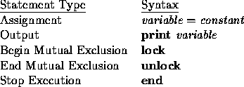
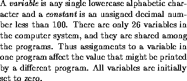

| Concurrency Simulator |
Programs executed concurrently on a uniprocessor system appear to be executed at the same time, but in reality the single CPU alternates between the programs, executing some number of instructions from each program before switching to the next. You are to simulate the concurrent execution of up to ten programs on such a system and determine the output that they will produce.
The program that is currently being executed is said to be running, while all programs awaiting execution are said to be ready. A program consists of a sequence of no more than 25 statements, one per line, followed by an end statement. The statements available are listed below.
 
Each statement requires an integral number of time units to execute. The running program is permitted to continue executing instructions for a period of time called its quantum. When a program’s time quantum expires, another ready program will be selected to run. Any instruction currently being executed when the time quantum expires will be allowed to complete.
Programs are queued first-in-first-out for execution in a ready queue. The initial order of the ready queue corresponds to the original order of the programs in the input file. This order can change, however, as a result of the execution of lock and unlock statements.
The lock and unlock statements are used whenever a program wishes to claim mutually exclusive access to the variables it is manipulating. These statements always occur in pairs, bracketing one or more other statements. A lock will always precede an unlock, and these statements will never be nested. Once a program successfully executes a lock statement, no other program may successfully execute a lock statement until the locking program runs and executes the corresponding unlock statement. Should a running program attempt to execute a lock while one is already in effect, this program will be placed at the end of the blocked queue. Programs blocked in this fashion lose any of their current time quantum remaining. When an unlock is executed, any program at the head of the blocked queue is moved to the head of the ready queue. The first statement this program will execute when it runs will be the lock statement that previously failed. Note that it is up to the programs involved to enforce the mutual exclusion protocol through correct usage of lock and unlock statements. (A renegade program with no lock/unlock pair could alter any variables it wished, despite the proper use of lock/unlock by the other programs.)
The input begins with a single positive integer on a line by itself indicating the number of the cases following, each of them as described below. This line is followed by a blank line, and there is also a blank line between two consecutive inputs.
The first line of the input file consists of seven integers separated by spaces. These integers specify (in order): the number of programs which follow, the unit execution times for each of the five statements (in the order given above), and the number of time units comprising the time quantum. The remainder of the input consists of the programs, which are correctly formed from statements according to the rules described above.
All program statements begin in the first column of a line. Blanks appearing in a statement should be ignored. Associated with each program is an identification number based upon its location in the input data (the first program has ID = 1, the second has ID = 2, etc.).
For each test case, the output must follow the description below. The outputs of two consecutive cases will be separated by a blank line.
Your output will contain of the output generated by the print statements as they occur during the simulation. When a print statement is executed, your program should display the program ID, a colon, a space, and the value of the selected variable. Output from separate print statements should appear on separate lines.
A sample input and correct output are shown below.
1 3 1 1 1 1 1 1 a = 4 print a lock b = 9 print b unlock print b end a = 3 print a lock b = 8 print b unlock print b end b = 5 a = 17 print a print b lock b = 21 print b unlock print b end
1: 3 2: 3 3: 17 3: 9 1: 9 1: 9 2: 8 2: 8 3: 21 3: 21